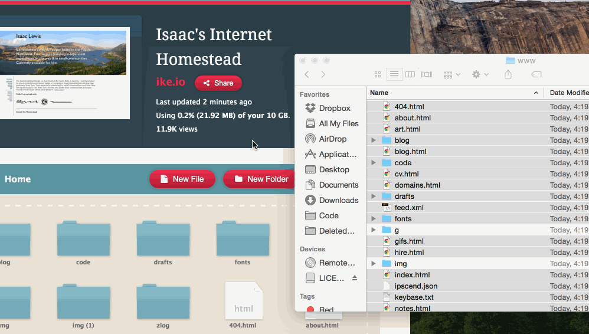

2015/11/6
The web has become really complicated. It takes so much time, so much frustration, and so much specialized knowledge to set up a new site, blog, forum, or chatroom that many internet citizens no longer build independent experiences. It's become so simple to join an existing silo (tumblr, wordpress, disqus, discourse) that we're not as likely to consider the idea of building something that's simple, clear, and completely ours.
I've been involved in indieweb stuff for a while now. The Indieweb is the idea that you can (and should) own your own internet persona – the data that you create online should live, primarily, on your own internet "homestead". The problem is that for a long time, the internet hasn't had tools that made that easy for folks who don't have Ops Chops.
Enter, Static-web Generators.
[Collective Groan]
Static web generators have really sucked. I have used tons of them, even helped build one from scratch, and I've been disappointed miserably every time. Jekyll, Hexo, Octopress, GH Pages – all very well-intentioned tools that unfortunately kept the knowledge-barrier high enough to be frustrating for newcomers, put constraints on what was possible with your code, and lacked clear enough documentation to really help folks get started with building their own website from scratch. Le sigh. This was not fun. This was not easy.

Until I discovered Harp.js, that is.
Harp is "The static web server with built-in preprocessing." It just works. Write your site in almost anything (Jade, Markdown, EJS, CoffeeScript, Sass, LESS and Stylus), and Harp will create a clean, fast site in HTML, CSS, and JS. Presto, exactly what we're looking for.
Let's dig in:
[Note: this tutorial requires Node.js. If you haven't got Node.js on your computer, you can use this guide to help you get it set up.]
Harp includes several components – a project builder (installation wizard to walk you through creating a static site), a compiler (compiles your templates and content into a www directory of HTML, CSS, and JS), and a server (to locally serve your uncompiled content, updating as you edit files). All of these components are installed with one npm module. With Node.js installed, copy and paste the following command into your Terminal application:
sudo npm install -g harp
After you type your computer's password, a progress bar will appear as all the components of Harp are downloaded and installed. Once that's finished, you can start your first static website.
First, navigate to the directory where you'd like to keep your static website. Then, initialize a Harp project by typing the following in your Terminal:
harp init myproject
Replace myproject with the name of your static website.
Check it out! It dumped some stuff into this directory! When you use the harp init command, it downloads some boilerplate from the Harp website, and creates the following files:
404.jade
_layout.jade
index.jade
main.less
Now we can spin up a local server to see our new static site. Type harp server into your Terminal.
[Note: this is why I love Node.js. Instead of having to install php and mysql and apache, you just install Node + a few packages and we're running a local server in minutes, instead of days]
Harp will tell you exactly where it is running:
------------
Harp v0.19.0 – Chloi Inc. 2012–2015
Your server is listening at http://localhost:9000/
Press Ctl+C to stop the server
------------
You should be able to navigate to http://localhost:9000/ and see your brand-new boilerplate static website.
Now you can open up your project directory in your filesystem and leave the local server running in your terminal while you edit your site. The server will monitor the folder and automatically update what you change on the site. Just refresh your browser when you make an edit.
You're ready to edit your static site. The boilerplate is all written in Jade and Less, but you can write in almost any templating language you want, including Markdown, EJS, CoffeeScript, Sass, and Stylus. Try creating some new documents and viewing the output HTML in your browser. Pretty magical, right?
Harp has fantastic documentation on their website for structuring your site, creating layouts, using preprocessors like Markdown, and deploying to hosts like Github Pages.
Personally, I like hosting on Neocities.org, which is fantastically easy.
First, we have to compile our static site into HTML, CSS, and JS. To do this, type the following in your Terminal:
harp compile
This will compile your static site into HTML, CSS, and JS in the www directory within your project directory.
Now, to deploy my site to Neocities, I just open that www directory in my finder, and:

Deploying to Neocities is as easy as Drag'n'Drop™.
I hope this tutorial was useful for you. If you have any questions, or if something doesn't work, please let me know on Twitter (@_crossdiver), or shoot me an email (isaac@ike.io).
I am currently available for hire if you'd like any consulting or development on your static web applications.